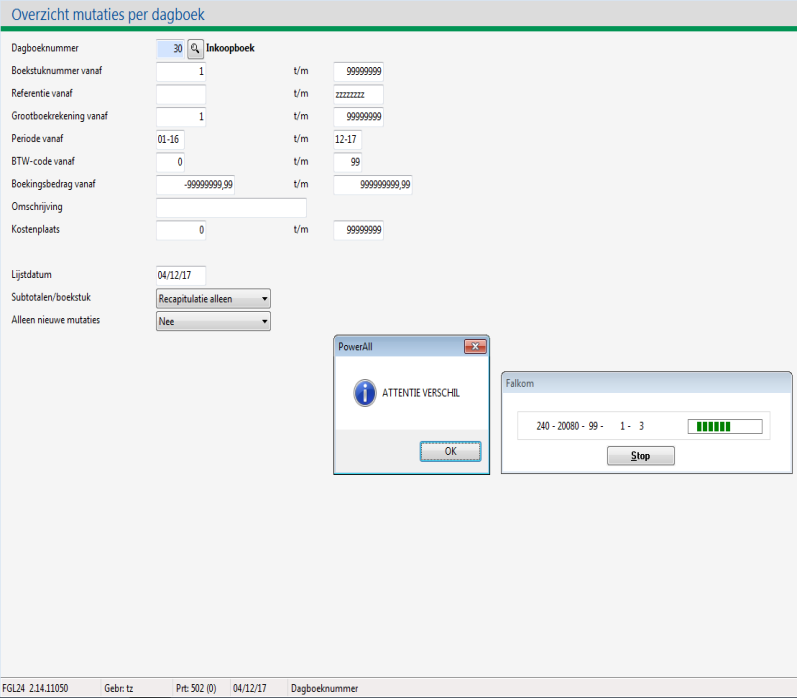
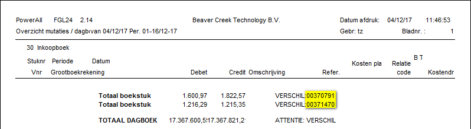
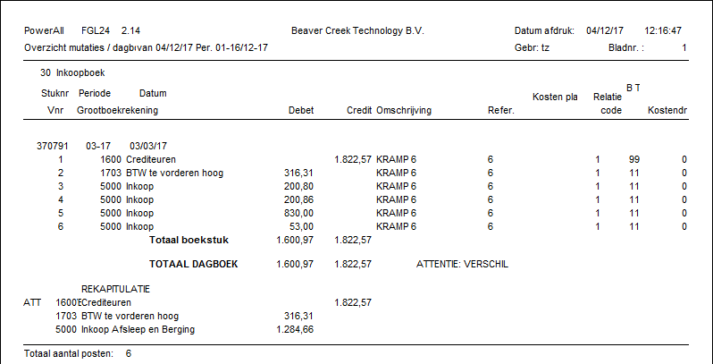

Ga naar Overzicht mutaties per dagboek (GLD).
-
In Menu 3.0 onder
 Financieel > Financieel overzichten > Mutaties per dagboek.
Financieel > Financieel overzichten > Mutaties per dagboek.
Vul het dagboeknummer in.
-
Indien het dagboek niet bekend is, begin met 1.
Vul bij periode 01-25 t/m 13-25 in.
Bij subtotalen/boekstuk selecteer Recapitulatie alleen.
Kies voor de knop Afdrukken.
-
Indien er geen melding Attentie verschil verschijnt, is het dagboek in evenwicht.
-
Ga vervolgens naar het volgende dagboek, zie stap 2.
Bij een verschil verschijnt de pop-up: Attentie verschil.
Kies voor de knop OK.

Het volgende scherm verschijnt: met achter VERSCHIL het stuknummer:

Ga weer terug naar Overzicht mutaties per dagboek om een gedetailleerd overzicht van het stuknummer aan te vragen.
Vul hiervoor het eerste boekstuknummer in, bijv. 370791 bij vanaf en t/m.
Bij subtotalen/boekstuk selecteer Ja.
Kies voor de knop Afdrukken. Een gedetailleerd overzicht verschijnt:

Corrigeer de boeking van het betreffende stuknummer in de juiste periode van het dagboek.
- Bij Inkoopboek: Ga naar Inkoopfactuur boeken (KI).
- Bij Verkoopboek: Ga naarVerkoopfactuur boeken (handmatig) (DV).
- Bij Kas of bank: Ga naar Memoriaal boeken (GJ).
Indien nodig, doe dit doet ook voor de andere stuknummers.